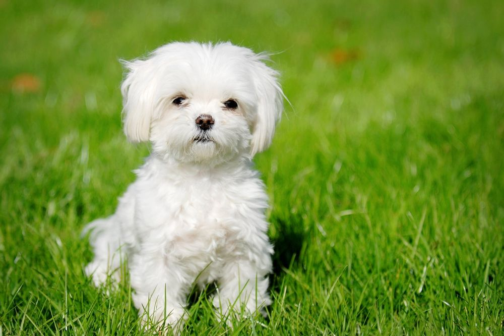
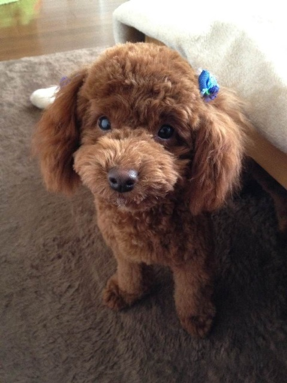

 
말티즈와 푸들을 교배해 탄생한 종을 말티푸라 부릅니다!
궈럼이 또한 말티푸!
어마어마한 귀여움을 가지고 있지요.

그렇다면 말티푸의 특성은 무엇일까요?
1990년대 미국에서 처음 생겼다고 알려졌어요.
털 빠짐을 줄이기 위해 일부러 교배시킨 하이브리드 종
말티즈의 푸들의 성격이 섞였어요! (예민함 + 똑똑함)
순하고 똑똑하지만 너무 예민하여 타인에겐 사나워요!(but cute)
평균 2kg~4kg의 귀여운 체구를 가지고 있어요.
그냥 너무 귀여워요.
[댓글]